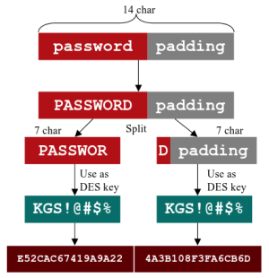

LM algorithm
LANMAN: LM(LAN Manager) hash
It is the oldest
password storage used by Windows.
LANMAN was turned off by default starting
in Windows Vista, but might still linger in a network if there older systems are still used. It is possible
to enable it in later versions through a GPO setting (even Windows 10). LANMAN hash is extremely weak, whereas the
NT hash is stronger but not great
How LM hash is created starting from
user's password:1. user's password is converted to uppercase, weakening the password
representation because the attacker doesn't need to guess the case properly to crack the password
2. if
length
◇ is less than 14 bytes → it's null-padded(NULL bytes added)
◇ more than 14 bytes → Windows
simply stores encrypted padding for that user's LANMAN hash, making the LANMAN hash useless for an attacker
because he can not dehash it to recover the password
3. it is split into two 7-byte, weakening another time the
password because an attacker can crack the two halves independently of each other(faster to crack).
4. each of
these 7-byte(56 bit) half is converted in a 64 bit DES key. To do that fill the remaining 8 bits, a parity bit is
inserted after every seven bits
5. Each of the 64bit DES keys is used to DES-encrypt the constant ASCII string
“KGS!@#$%”, resulting in two 8-byte ciphertext values
6. These two ciphertext values are concatenated to form a
16-byte value, which is the LM hash
Here we can find a generator:
https://asecuritysite.com/encryption/lmhash